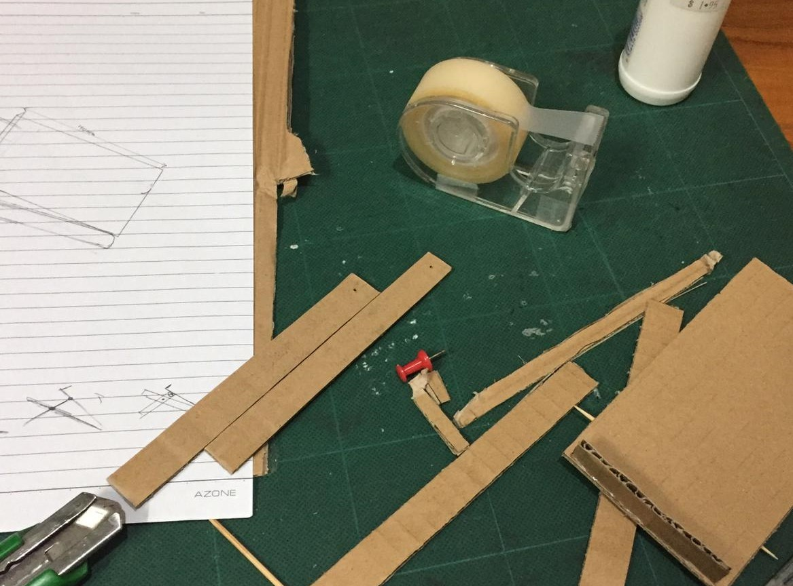
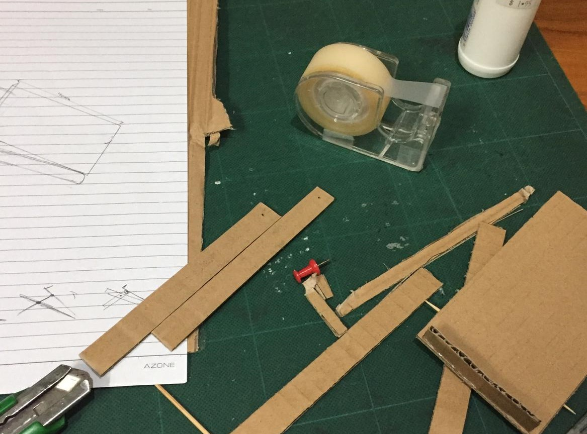
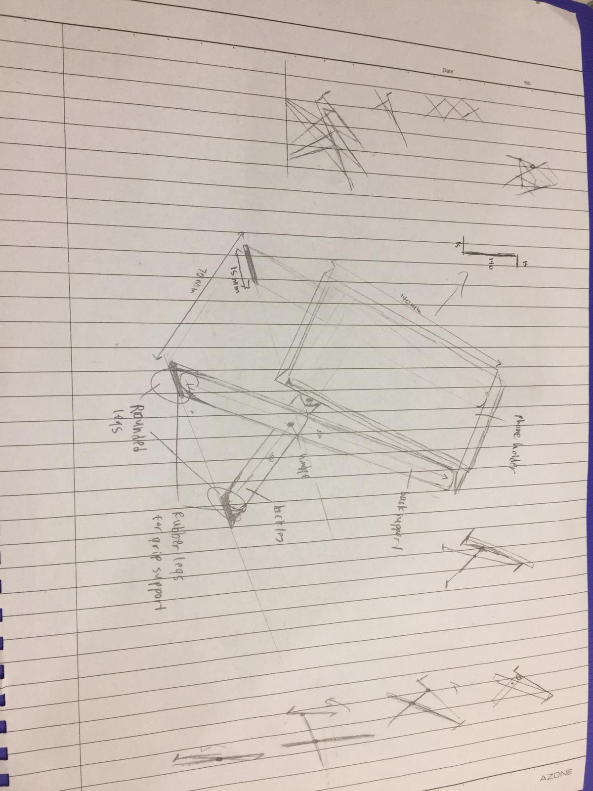
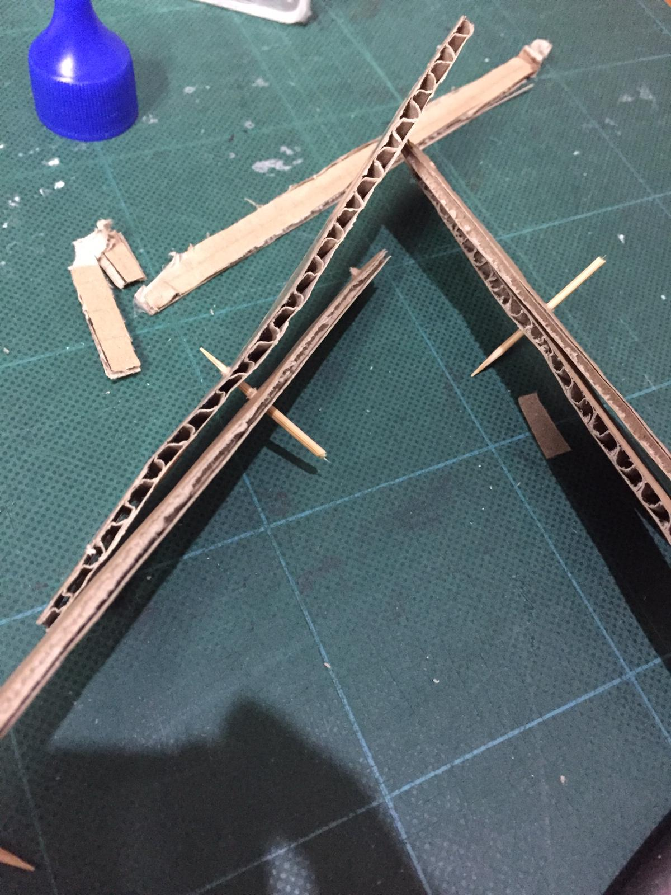
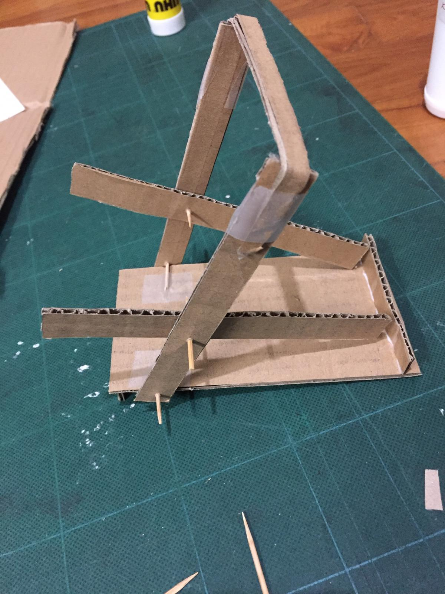
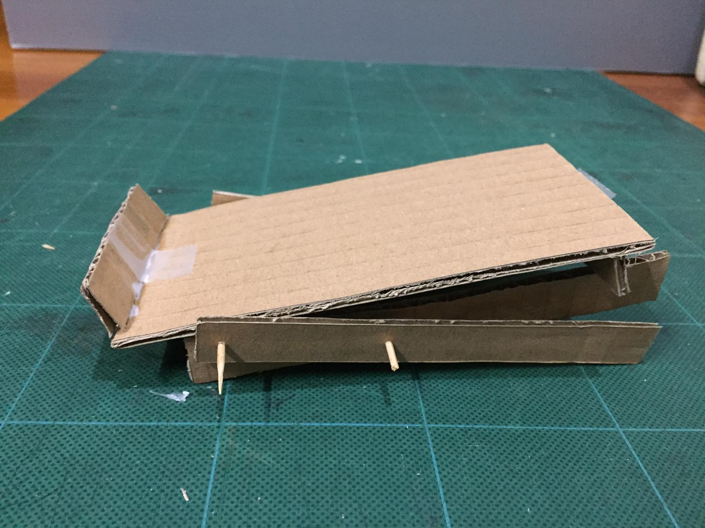
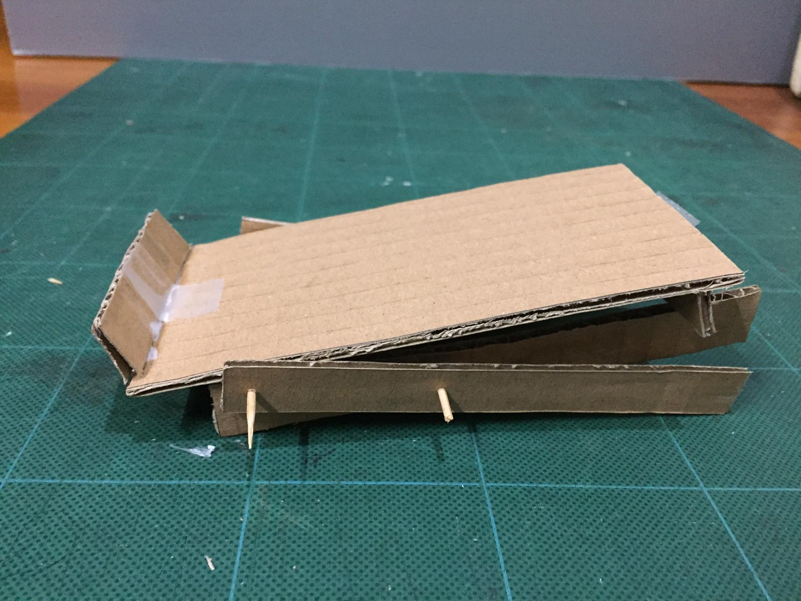
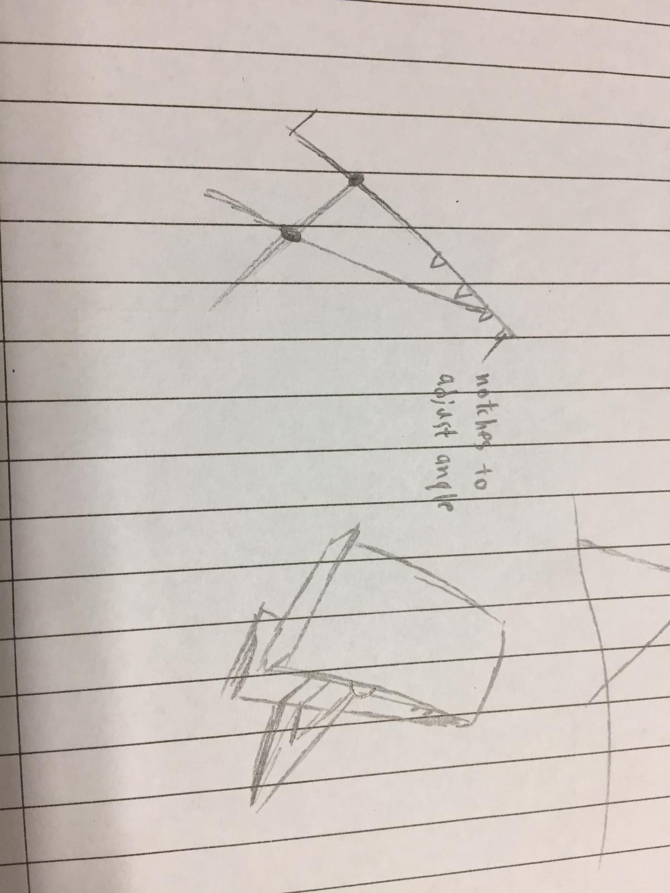

Prototyping
(Part of) the stuff between turning an idea into reality
(Part of) the stuff between turning an idea into reality
Here we want to make a portable phone stand... We can start by researching existing ideas so we can get an idea of what we should consider when designing one.
As we want it to be portable, I searched up on "foldable phone stands" and listed down some points.
Next step is to draw out your idea, it does not need to be a good drawing, as long as your idea is clear.
For my phone stand I thought of using a mechanic similar to foldable chairs, so I sketch out some rough desings, following by a isometric sketch and added dimensions for scale.
To be honest I wasn't sure if my design actually works. Thats where prototyping comes into play.
Prototyping lets you get a feel of your idea before manufacturing it. Using cardboard to build your idea lets you test, evaluate and make changes to your design.
I found cardboard and started measuring and cutting out the pieces based on the sketches
I used wood glue and tape to stick fixed parts together and for the moving joints I poked a hole and used a toothpick.
The phone stand all together, as my phone is too heavy and will crush the cardboard I used a lightweight scissors as a phone replacement.
.jpeg)
.jpeg)
.jpeg) 

One issue with the current design is its unable to adjust the viewing angle as the back support does rests on the top of the phone holder. One way to make it adjustable is to create notches behind the holder to rest the back support on. The back support and legs can also be flatten so it takes up less space when collapsed.
